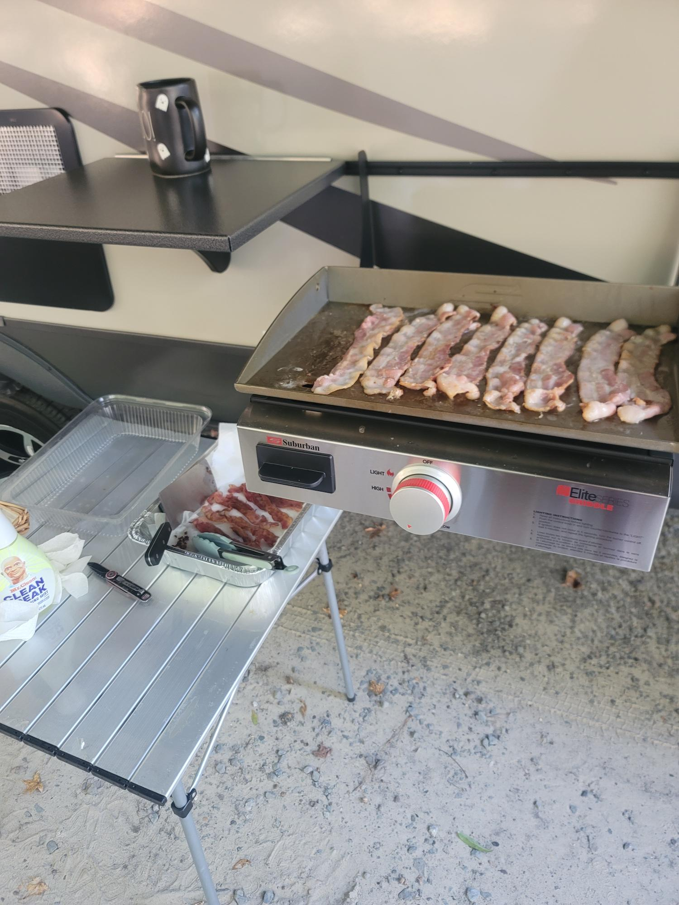
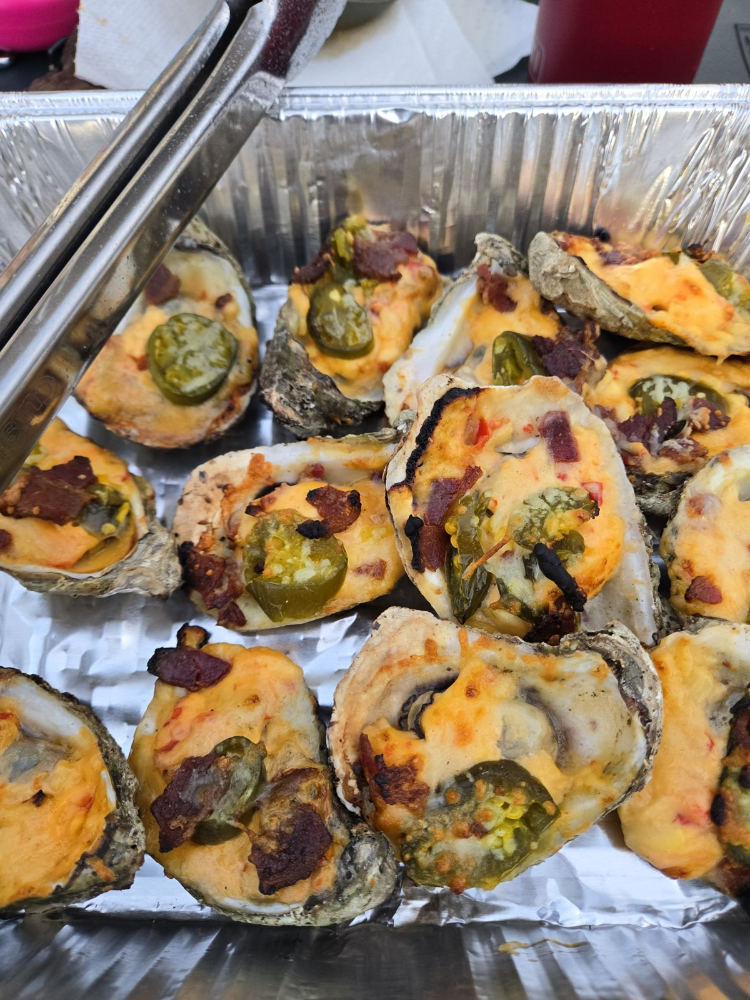
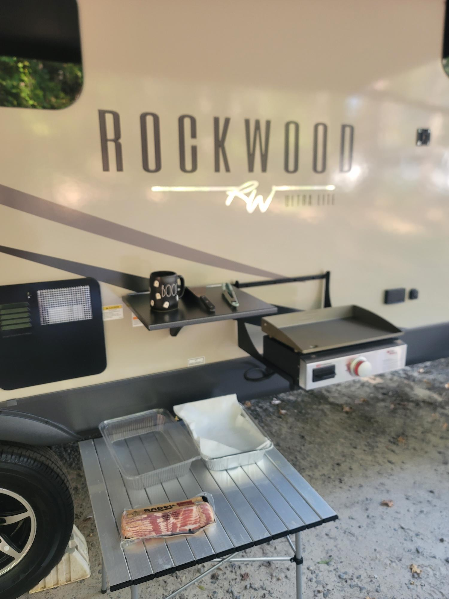

Our Two-Week RV Meal Plan (Toddler-Approved, Free Printable)
Fourteen days of breakfasts, lunches, and dinners we actually cook at the campsite: griddle mornings, cooler lunches, and fire pit nights. It's built around a picky toddler and leftovers that turn into the next day's lunch.

Disclosure: This post contains affiliate links. If you buy through our links we may earn a small commission at no extra cost to you.
Meal planning is the difference between a relaxing trip and three nights of "what are we eating?" at 7 p.m. with a hungry toddler and two dogs underfoot. After a lot of trips (and a lot of gas-station dinners we're not proud of), we landed on a simple rhythm that works for two weeks or two nights.
Grab the free printable
The full 14-day plan on two pages. Stick it on the camper fridge, or use it to build your grocery list.
How we plan camping meals
- Travel days are the easiest days. Breakfast burritos made at home, sandwiches in the cooler, and an air fryer dinner. Nobody wants to cook after setting up camp.
- Cook once, eat twice. Every big dinner (chili, stew, a seafood boil) becomes the next day's lunch.
- Breakfast is the fun meal. The griddle comes out, the dogs line up, and it's the best part of the day.
- One "fire night" each week. Foil packs, pizza on the grate, or oysters if we're feeling fancy.
- Keep a toddler backup. Chicken tenders and fries in the air fryer have saved more than one dinner.

Our Two-Week RV Meal Plan
Toddler-approved camping meals · wanderingwillowrv.com
The 14-day plan
🔥 fire pit · 🍳 griddle · 🌀 air fryer · 🍲 big pot · ❄️ cooler/no-cook
Week 1
- B
- Breakfast burritos made at home, wrapped in foil ❄️
- L
- Cooler sandwiches, fruit cups, chips ❄️
- D
- Chicken tenders & fries 🌀
- B
- Pancakes & bacon 🍳
- L
- Cheese quesadillas & salsa 🍳
- D
- Smash burgers & corn on the cob 🍳
- B
- Scrambled eggs & toast 🍳
- L
- Turkey roll-ups, apple slices, crackers ❄️
- D
- Foil packs: sausage, potatoes & peppers 🔥
- B
- Yogurt, granola & berries ❄️
- L
- Hot dogs on the fire 🔥
- D
- Big pot of chili (save half) 🍲
- B
- French toast 🍳
- L
- Chili cheese dogs (leftover chili) 🍲
- D
- Chicken thighs, rice & green beans 🌀
- B
- Egg & sausage breakfast sandwiches 🍳
- L
- PB&J, veggies & ranch ❄️
- D
- Fried rice with leftover rice & chicken 🍳
- B
- Biscuits & sausage gravy 🌀
- L
- Foil-pan nachos 🔥
- D
- Flatbread pizzas on the grate 🔥
- ✓
- Goldfish, pretzels & animal crackers
- ✓
- Applesauce pouches & fruit cups
- ✓
- Cheese sticks & grapes (cooler)
- ✓
- Marshmallows, chocolate & graham crackers
Week 2
- B
- Hash browns & eggs 🍳
- L
- Grilled cheese & tomato soup 🍳
- D
- Shrimp & sausage boil with corn & potatoes 🍲
- B
- Overnight oats (made the night before) ❄️
- L
- Shrimp tacos from boil leftovers 🍳
- D
- Pork chops & boxed mac and cheese 🌀
- B
- Pancakes & fruit 🍳
- L
- Chicken Caesar wraps ❄️
- D
- Philly cheesesteaks 🍳
- B
- Breakfast burritos 🍳
- L
- Cheesesteak quesadillas (leftovers) 🍳
- D
- Beef stew & cornbread (save half) 🍲
- B
- Cereal, bananas & coffee ❄️
- L
- Stew leftovers 🍲
- D
- Chargrilled oysters or grilled chicken 🔥
- B
- French toast with the last of the bread 🍳
- L
- Hot dogs & chips 🔥
- D
- "Everything" hash with leftovers 🍳
- B
- Muffins & fruit ❄️
- L
- Cooler sandwiches ❄️
- D
- Takeout on the way home. You earned it.
Swap any day for a restaurant night. Breakfast can always be cereal. Free printable from wanderingwillowrv.com
Prep at home before you leave
Thirty minutes in your own kitchen saves hours at the campsite (and a lot of dishes in a tiny sink).
- Make and freeze breakfast burritos for the first morning. They thaw in the cooler and reheat on the griddle.
- Chop the peppers, onions, and potatoes for foil packs and keep them in zip bags.
- Brown the ground beef for chili or tacos at home so there's less grease at camp.
- Mix pancake batter dry ingredients in a shaker bottle. At camp you just add water.
- Pre-cut toddler snacks (grapes, cheese cubes, cucumbers) into grab-and-go cups.
- Freeze water bottles to use as cooler ice that you can drink later.
The gear that makes this plan work
Everything above is made with four things: a flat-top griddle, an air fryer, a fire pit with a grate, and a propane burner with a big pot. We wrote up all of them, plus the rest of our favorite camping gear, in our gift guide for RV families.

Our Air Fryer
Toddler chicken tenders in ten minutes, and no hot oven heating up the camper.
Check price
Aluminum Roll-Up Table
Our griddle prep station every morning. Sets up in a minute and wipes clean.
Check priceToddler tips that saved our sanity
- Keep one "safe" food on every plate. If dinner's a flop, at least the fruit or the bread got eaten.
- Eat early. Dinner by 5:30 means bath and bed before the campground gets loud.
- Let them help. Stirring pancake batter or adding cheese to quesadillas buys a lot of cooperation.
- Pack a snack bin they can reach. It keeps "I'm hungry" from turning into a meltdown.
What's your family's go-to campsite meal? Tell us. We'll add the best ones to the plan.
— James & Mallory 🐾
16 Gifts for RV Families That Actually Get Used
The gear that earns its spot in our camper every trip, sorted by who you're shopping for.